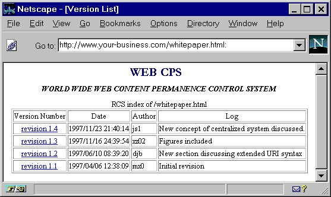
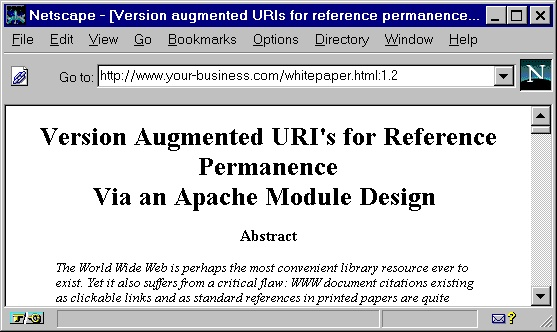
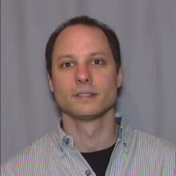

|
Click for the talk
Computer Networks and ISDN Systems 30 (1-7) (April 1998) 337-345.
Presented at WWW7, Brisbane, Australia, 1998.
(Slightly edited)
J. Simonson,
D. Berleant,
X. Zhang,
M. Xie,
and
H. Vo
Department of Computer Systems Engineering
University of Arkansas, Fayetteville, AR 72701-1201
js1@engr.uark.edu,
djb@engr.uark.edu
The World Wide Web is perhaps the most convenient library resource ever to exist. Yet it also suffers from a critical flaw: WWW document citations existing as clickable links and as standard references in printed documents are quite unreliable. This arises from the ease with which these documents may be altered. Alteration of cited WWW documents may lead to the citations themselves becoming invalid or inaccurate. Printed documents are less prone to such problems due to the greater difficulty in altering or eradicating them. As a consequence of the alterability of WWW documents, the whole traditional system of new work building upon an archive of unchangeable previous work ceases to be valid. For the first time in history, documents are being built upon a shifting foundation to an extent of ever increasing and serious proportions. This work investigates a system aimed at encouraging the stability of WWW documents. In doing so it helps to preserve the accuracy of citations over time. The system presented extends a document's URI (Universal Resource Identifier) to include date or revision information thus allowing document providers to permit users to refer accurately to a particular document version. This paper both describes the system and demonstrates its use. The system is implemented as an Apache WWW server module. The module processes and retrieves documents referenced with extended URIs. It provides a model public domain system for alleviating the problem of content stable WWW documents.
Keywords: Identifiers, reference permanence,
versioning, archiving, Apache.
Documents on the WWW often undergo changes. A
reference to a WWW document can cease to be valid when the document
is altered. Though much improved, the document may no longer
contain the information for which the reference was intended. The
problem is further compounded when the URIs of referenced documents are
changed.
A growing body of work has addressed the alterability
of links, underscoring increasing perception of the significance of the
problem. A smaller but equally important body of work has started to
address the importance of content permanence of documents on the
WWW. The work described herein focuses on content permanence. To put our
work in context, however, the alterability of URIs is briefly discussed
next.
One typical example of the need to alter a URI is when
an individual changes affiliation. URIs pointing to the individual's web
page must be changed to point to his or her new location on the
internet. Clearly, it would be a step in the right direction to have
virtual location identifiers that don't change. An efficient way to do
this is to have a logical URI or URL which is an alias of another
physical URI, and automatically forwards (or "redirects") requests to
the physical URI. 1. Introduction
PURLs are intended as a stopgap until such time as Uniform Resource Names (URNs) become established. A URN is intended to be a permanent name for a unique resource, where a resource might be a document (our concern here) or some other resource. This is analogous to the use of International Standard Book Numbers (ISBNs). URLs on the other hand specify the locations for these unique resources. A given resource might be lost and no longer accessible via any URL, or it might be available at one or several different URLs. [4, 5] describe the means by which a name server takes a URN as input, and returns a URL at which the resource may be found (if there is one). URNs are currently undergoing specification by the URN Working Group [6] of the Internet Engineering Task Force (IETF) [7].
Although PURLs and URNs help to address the permanence of a document's unique identifier, they do not address the problem of document content permanence. Archiving is one means of achieving content permanence. While it is useful to be able to archive documents, it is often necessary to change them as well. The way to have both permanence and changeability is by archiving one version and creating another.
One approach to archiving of WWW information is to ensure the existence of "snapshots" of the WWW, each stored as a permanent record of the information on the WWW at a particular point in time[8]. This is currently being done by the Internet Archive organization [9]. Despite what at first glance seems a daunting task, downloading and storing a copy of every accessible document on the WWW is technically quite doable. Kahle [8] estimates the memory requirement at a relatively modest 1.5 terabytes as of mid-1997, doubling yearly. He proposes yearly followup snapshots containing only material which has changed since the last snapshot.
Other methods of archiving have begun to center more on the use of revision control systems via the Hypertext Transfer Protocol (HTTP). Versioning is sufficiently important in a practical sense that versioning tools are widely available. For example rcs (revision control system) is one of a few UNIX utilities for versioning [10, 11]. Because of the importance of versioning to such areas as electronic commerce and record retrieval for patent, legal, and medical cases, versioning systems will need to become tamper-proof. Such uses of revision control systems may require documents to be processed through a secure hashing scheme that gives special codes that are unique to each version of a document and its associated creation date. Any modification to the document or claim that it was created at a different time implies a code different from the valid one [12]. This scheme is being applied commercially [13, 14] as well as to the documents in a digital library of scholarly materials [15, 16].
Versioning concepts can apply not only to individual documents but also to sets of documents that are interconnected by hyperlinks. Thus a version may refer to a particular state of a document, or it may refer to the state of a set of interconnected documents. This concept can be used in distributed authoring of hypertext documents [17]. In fact, a working group of the IETF is devoted to such distributed authoring and versioning [18].
The use of revision control systems has found its way into a number of works dealing with versioning across the WWW. Vitali and Durand [19] describe a method of encoding multiple versions (indeed an entire tree of diverging versions) in one file which contains HTML markup tags as well as a set of specially designed versioning tags. The file suffix for such versioned documents is "vtml." To request a given version, the user provides a request like http://www.your-business.com/Research/MPP/whitepaper.vtml/2.2.3 which specifies version 2.2.3 of the vtml format document whitepaper.vtml. The server must know how to extract version 2.2.3 from whitepaper.vtml by interpreting the version tagged text chunks appearing in it. Furthermore, special editor features for properly handling version tags must be used to do any updates to the document since the version tagging operations are too complex to be done reliably by hand. Their system is aimed at assisting in collaborative work across the WWW by implementing a prototype WWW server based revision control system. Their approach requires a fairly complex vtml editor, and also a vtml parser that must be run by the server. Mortice Kern Systems offers an analogous system, Integrity Engine, in commercial form which is also intended to assist in collaborative work across the WWW by implementing a fairly complete WWW revision control system [20]. These works focus not so much on the issue of WWW document content permanence but on collaborative work through the WWW using revision control. The focus of this paper is on content permanence although the work to be presented in the following sections could be extended in the future to support collaborative work.
A work more closely related to this paper's focus, hyperlinks to stable ("permanent") content, is that of Pettengill [21]. Pettengill created a Common Gateway Interface (CGI) program to handle the retrieval of documents under revision control. His purpose was to capture the history of a project or topic through its revisions. CGI based systems such as Pettengill's have the drawback that the document citation is tied to the URI of the CGI program. In addition it can, as a consequence of system calls to the CGI program, require more system processing power than a compiled server component. Depending on the server, output may receive no further processing thus requiring the CGI program to handle such extras as Server Side Includes (SSI).
This paper describes a system we have implemented that uses the concept of version and date extended URIs to encourage content stability in references to WWW documents. The system is implemented as a module for the Apache WWW server [22]. This content permanence module, as a consequence of being part of the server, removes the problems previously mentioned with regards to CGI programs. It should be noted, however, that programming errors that are part of a server can have greater repercussions than those in a CGI program.
In Section 2 of this paper,
we will discuss the concept of content permanence relating it to the
system we have developed to handle this problem.
Section 3 presents the syntax of date and
version extended URIs which are a necessary part of the whole
system. Along with this section are given indications of when a date
extended URI might be used over a version extended URI and vice
versa. The actual implementation through an Apache module is described
in Section 4.
Section 5 summarizes our work and briefly
mentions future extensions.
Because the content of a WWW document can be updated
at any time, the stability of the content of the document is
undependable. Consequently it is difficult to use such a source as a
reliable reference due to the changeability of its content. A
technical solution is needed to keep the content referenced by a link
the same even when the corresponding document needs to be updated.
This can be done by retaining revisions of the document and
referencing the appropriate one. The solution proposed here involves
extending URIs to include date or version information, which the
server uses to obtain the appropriate revision of a document. (The
syntax for the extended URI is described in 2. URI Content Permanence
In our system, the client requests a URI augmented with a suffix that is a date or version description, and the server provides the appropriate version of the requested resource. The server does this by extracting the requested version from a file containing the document and its revision history. In this system the WWW document provider must store documents using the RCS revision control system. In conjunction the Apache server must be configured to use the new module described in this paper.
The source code for the content permanence functionality is currently being drawn directly from the Unix rcs command co (check out)[11]. This functionality has been added to the Apache WWW server as a special Apache "module," per the Apache Applications Program Interface (API).
Our design falls squarely in the category of distributed version maintenance systems. Every site wishing to have support for links to permanent content must run a server that supports version retrieval. Centralized version maintenance would also be possible. Under a centralized approach, a site might contract with an external version maintenance service to archive the various revisions of their resources and make them available over the WWW. This would reduce the possibility of document providers altering preexisting document versions.
In both the distributed system and the centralized system the server is altered to provide the particular version of interest to a requesting client. Alternatively the server could provide the entire contents of the RCS file letting the client extract the desired version. This method would use a WWW client plugin that understands either RCS files or some other format such as non-standard HTML tags that denote version-specific information, as in [19]. Two major disadvantages of the client approach compared to our server approach are (1) the WWW contains more installed clients than servers, so a server-based solution such as ours has a wider impact per installation, and (2) the client approach implies that the proper version is extracted after transmission of all versions over the web, leading to higher network traffic and slower response times compared to a server approach such as we describe here.
Another design issue concerns security. Should archived versions be authenticated in some way? If not, archived versions could be surreptitiously changed. An authentication system such as that sold by Surety [13] could be integrated into a version archiving solution to alleviate this type of problem.
Each of the above mentioned approaches uses extended
URIs that contain date or version specifications. We define the syntax
for these extended URIs in the following section.
Since our system supports URIs augmented with date
or version specifications, it is important to describe the syntax and
semantics of these augmentations.
In order to augment URIs with revision information,
each actual version must have some unique version designation. Version
information can be specified by actual version number or by a date. To
make sense of URIs augmented with a date specification, there must be a
mechanism at the server for translating the date specification into the
proper version number. The version number received is the most recent
version saved prior to the date specified. This implies that many date
specifications may map to one version.
Since HTTP GET requests by the client must contain a
version or date specification in our system, a mechanism for this is
necessary. One possibility is through a new HTTP request-header field.
Link specifications in an HTML document could include the information,
the client could use that information in the link (when it is provided)
and put it in the HTTP request-header field, and finally the server
could use the new request-header field to help in extracting the proper
version to serve. Alternatively the URI can be extended to include the
date or version desired. This eliminates the need for an additional
request-header field. The server then simply parses out that information
from the URI and uses it to extract the proper version. We have
established a scheme for this, as follows.
First, to ensure backward compatibility, we specify
appropriate handling of a request for a URI having no appended version
or date spec. Such a request would return either the most recent
version in the case of multiple versions or the only available version
in the case of a single version. A request of this type is depicted in 3. Date and Version Extended URIs
|
|
We specify that appending a colon (":") to a URI causes the server to serve a listing of all versions and their associated dates. This of course requires the server to respect the ":" as a reserved character in the syntax of URIs with version or date specifications. The results of such a request are shown in Figure 2, which contains a list of clickable version links. This is useful when referring to all versions or when uncertain as to which version to reference.
|  |
A version number following a ":" causes the server to serve the specified version. An example is provided in Figure 3. A document discussing the revision history of another document could benefit from this syntax. Links referring to a particular version of source code would be another case in which this syntax might be useful.
|  |
We specify that appending a date spec to the URI causes the server to serve the version that was current as of that date. This would be the most recently saved version prior to the date specification. Versions appearing later than the requested date specification would be unsuitable because they would contain changes that occurred after the time at which the content was cited by the link. The date specification format should comply with RFC 1123 [23] or ANSI C's asctime() except that spaces are replaced by underscores. A date extended URI is shown in Figure 4.

|
Date specifications might be used when referring to documents that are time sensitive. A weather bulletin is such an example because of its time dependent nature. Date specifications might also be used when attempting to provide a sense of the time relation between separate documents. This might apply when reviewing the work histories of two groups with competing patent claims. Lastly a writer may find it easier to just append the current time to a URI to reference the current version of a document.
As a heuristic guideline, the syntax used should
reflect whether the revision history is of more interest (suggesting
the version syntax) or whether the currency is of more interest
(suggesting the time syntax). For both syntaxes, the mechanism
for retrieval of the appropriate revision is similar. We discuss the
mechanism our system uses next.
Due to the popularity of the Apache server and the
availability of its source code, we decided that Apache with its API was
an appropriate server for adding the necessary functionality for
handling version and date extended URIs. Apache's modular software
design allows second party modules to be easily incorporated into the
server. System administrators can install Apache with the modules of
their choosing providing the server with the functionality necessary for
their particular site.
4. Apache Module Design and Supporting Software
The fixup routine for the new content permanence module checks to determine if the requested document is under RCS control. It does so by checking for an RCS file with the same name as the requested document followed by a ",v" extension. This file if it exists resides in the RCS subdirectory under the directory from which the document is being requested. If the file is under RCS control, the fixup routine in the new module calls code to extract the appropriate revision of the file from the RCS revision repository and store it in a temporary file. The server then is internally redirected to access this file. In the event that the request was for a revision listing, such a listing is returned and no redirection is necessary. When the request is completed, the new module's logger routine removes the temporary file.
Various configuration file commands control the new module. One specifies the directory for storing temporary files. Another enables or disables the module. The system can be configured to allow or disallow override of this command in .htaccess files.
In conjunction with this software, software has been
developed to process an HTML document and add date specifications to
each URI. Currently the date specifications represent the time at
which the software was run. This software is being augmented to check
each link to determine if it points to a document under revision
control and if so what the most recent version is. Only links to
documents under revision control will be considered by this program
for augmentation with date specifications. Those links could either
be augmented by default or augmented if the user responds positively
to a prompt.
This paper describes our approach to supporting
permanence in the content referred to by links in HTML documents. Thus
it aims at preserving the traditional approach of new work building upon
an unchanging foundation of previous work.
In our solution, the server retrieves the correct
version of a document based on the version or date specification
suffix appended to a URI. Documents under revision control must be
maintained using systems based on RCS. Other revision systems could be
used but would require modifications to the new content permanence
Apache module. The new module is built using the standard Apache API.
This new module uses code from the generally available RCS revision
control system. Because it supports serving URIs augmented with date
or version specifications in a distributed manner, using the existing
Apache module API for accessibility and low cost, it is suitable for
widespread, incremental application. It requires no special client
programs. The modified Apache server we have developed also
understands ordinary URIs without version or date suffixes. We also
described our working prototype program for transforming ordinary URI
links in an HTML file into URIs containing appropriate date
specifications. The additional features that we plan to add to the
existing system will serve to better meet the goal of an accessible,
workable system for encouraging content permanence.
The importance of having links refer to content which
is permanent is simply, and importantly, to preserve the traditional
system of supporting new work by referencing previous work despite the
ongoing transition to a cyberspace era of digitally stored
references. If referred-to work can change, as is currently the case on
the WWW, that traditional and important system is in jeopardy.
The new Apache module will soon be thoroughly tested
and documented, and submitted for distribution as an officially
sanctioned Apache module. Our approach and syntax need to be developed
into a form suitable for consideration and approval by the IETF. Work is
needed toward gaining acceptance of the system for use in a digital
library of significant size and impact, and more generally toward
obtaining general acceptance in the WWW community, with all of the
technical development and public acceptance measures that entails. The Netscape browser frame is a trademark of 5. Conclusion
Acknowledgements
References
*
*Citations of electronic sources
follow the format described by J. Walker, "Walker/ACW Style Sheet
(Columbia Online Style)," January 1995.
http://www.cas.usf.edu/english/walker/mla.html (February 10, 1998).
The format has been endorsed by the Alliance for Computers and
Writing.

Jonathan Simonson is an Assistant Professor in the
Department of Computer Systems Engineering at the University of
Arkansas, Fayetteville. His research interests include
computer architecture, real-time systems, multiprocessor design, memory
system management and design, compilers, and the World Wide Web.
He received the Ph.D., M.S., and B.S. degrees in electrical
engineering from the Vitae
 Daniel Berleant is an Associate Professor at the University of
Arkansas, Fayetteville. He publishes in the areas of information
customization, text processing, qualitative and numerical simulations,
interval mathematics, and computer assisted language learning. His
teaching activities include a course on the future of computing. He
received the Ph.D. and M.S. degrees in computer science from the
University of Texas at Austin in 1991 and 1990, respectively, and the
B.S. degree in computer science and engineering from the Massachusetts
Institute of Technology in 1982.
Daniel Berleant is an Associate Professor at the University of
Arkansas, Fayetteville. He publishes in the areas of information
customization, text processing, qualitative and numerical simulations,
interval mathematics, and computer assisted language learning. His
teaching activities include a course on the future of computing. He
received the Ph.D. and M.S. degrees in computer science from the
University of Texas at Austin in 1991 and 1990, respectively, and the
B.S. degree in computer science and engineering from the Massachusetts
Institute of Technology in 1982.
Xiaoxiang Zhang is receiving the M.S. degree in
computer systems engineering at the University of Arkansas, Fayetteville
in Spring 1998, and received the B.S. degree in electronics engineering
from Tsinghua University, Beijing in 1996. His primary area of
interest is internet programming.